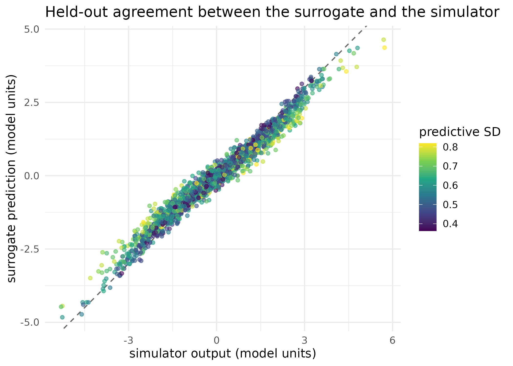
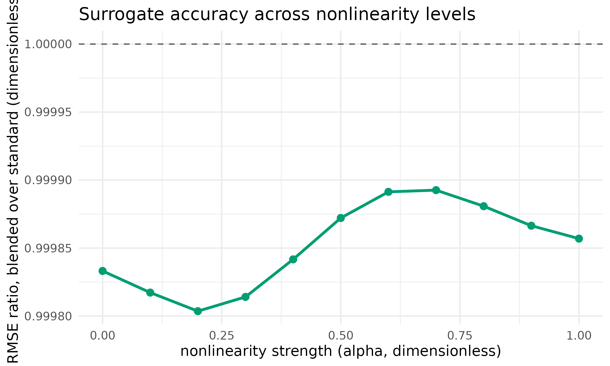
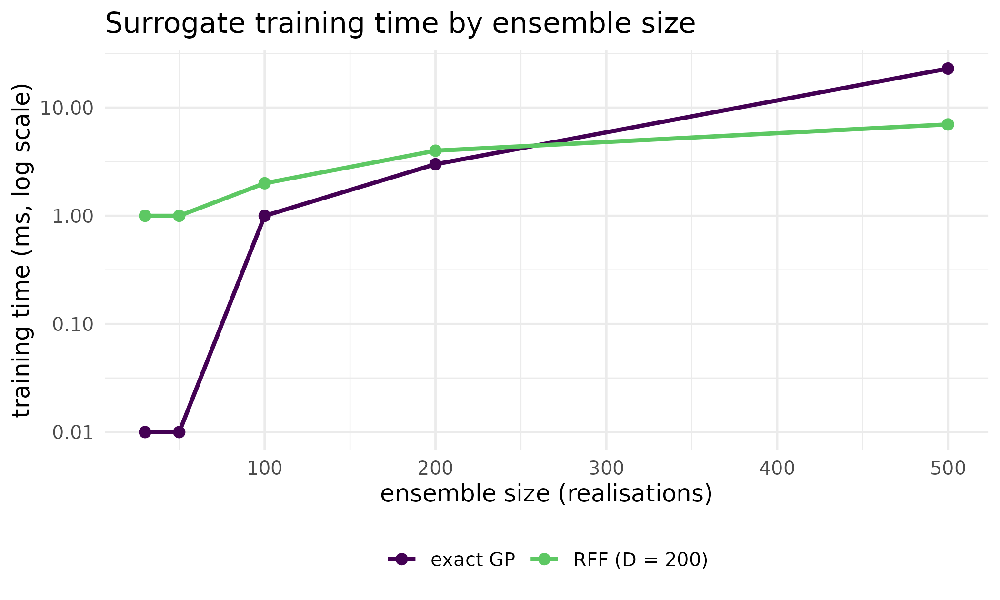

When can a surrogate stand in for the simulator?
Source:vignettes/surrogate-ies.Rmd
surrogate-ies.RmdWhy
A single run of my crop model takes about a minute, and an iterative ensemble smoother wants fifty of them per iteration for six or eight iterations. That is most of a working day for one calibration. The question I need answered before I build a surrogate into the loop is: can a Gaussian process trained on the ensemble stand in for some of those model runs without damaging the posterior, and how would I know when it cannot? This vignette measures both halves on synthetic problems small enough to run while you read, and shows what PESTO does when the answer is no.
What
train_gp_surrogate()
fits a Gaussian process with a radial-basis kernel from an ensemble of
parameter vectors and the model outputs already evaluated at them,
returning the fitted length scale, signal variance and log marginal
likelihood. predict_gp_surrogate()
evaluates that process at new parameter vectors and returns both a
predicted mean and a predictive standard deviation, which is the
quantity the switching rule reads.
surrogate_ensemble_update()
performs the classification and the blended smoother update: train a
process from the current ensemble, predict outputs for every
realisation, classify each by predictive uncertainty into surrogate-safe
and needs-the-full-model, apply a mean-offset bias correction, and
compute the update on the blended ensemble. pesto_surrogate_ies()
is the guarded front door to the same computation: it checks the
training regime first and returns a typed pesto_abstention()
instead of a low-value run when the regime is unfavourable. check_surrogate_regime()
is that check, callable on its own before an expensive ensemble is
scheduled.
For ensembles too large for an exact process, train_rff_surrogate()
and predict_rff_surrogate()
substitute the random Fourier feature approximation of Rahimi and Recht
(2007), which trades exactness for a training cost that grows linearly
rather than cubically in the ensemble size.
Regime of applicability
The process has a bounded operating envelope, worth stating before
the demonstration. As a soft floor, use
n_train >= 5 * n_params. Below that ratio the
surrogate’s predictions at points it has not seen degrade, while its
predictive standard deviation at its own training points stays
at the noise floor; the switching rule reads the second quantity, so it
cannot see the first. That is why the floor is enforced as a separate
gate rather than left to the switching statistic, and the sweep at the
end of the Do section measures the degradation it guards
against. The second axis is smoothness: smooth, near-linear responses
are well approximated by a radial-basis kernel and yield large savings,
whereas rough or near-discontinuous responses such as sharp wetting
fronts, threshold activations and regime switches defeat the kernel and
savings collapse. The third is ensemble size: larger ensembles improve
the fit roughly as \mathcal{O}(n^{-1})
in posterior variance, and fewer than about twenty realisations rarely
produce a usable surrogate. Outside this envelope, run pure smoother
iterations through ensemble_solution():
surrogate_ensemble_update() reports near-zero savings
rather than degrading the posterior, but the training cost is paid for
no return.
Do
The test problem
A nonlinear forward model inspired by groundwater flow, with a linear sensitivity and a nonlinear interaction term:
y_j = \eta_j + \alpha \sin(\eta_j)\, e^{-0.1\,\lvert \eta_j \rvert} + \varepsilon_j, \qquad \eta_j = \sum_k G_{jk}\theta_k .
Here \eta_j is the linear predictor and \alpha controls the nonlinearity: \alpha = 0 is linear, \alpha = 1 is strongly nonlinear. The parameters, design matrix and observations below are synthetic, generated at a known truth so the recovery checks later in this vignette have something to compare against.
forward_model <- function(theta, G, alpha = 0.3) {
linear <- as.numeric(G %*% theta)
nonlinear <- alpha * sin(linear) * exp(-0.1 * abs(linear))
linear + nonlinear
}
set.seed(42L)
n_par <- 20L
n_obs <- 50L
n_real <- 50L
theta_true <- rnorm(n_par)
G <- matrix(rnorm(n_obs * n_par, sd = 1 / sqrt(n_par)), n_obs, n_par)
y_obs <- forward_model(theta_true, G, alpha = 0.3) + rnorm(n_obs, sd = 0.1)Training a process on it
gp <- train_gp_surrogate(par_ens, obs_ens)
c(n_train = gp$n_train, n_par = gp$n_par, n_obs = gp$n_obs)
#> n_train n_par n_obs
#> 50 20 50
round(c(length_scale = gp$length_scale, signal_var = gp$signal_var,
log_marginal_likelihood = gp$log_marginal_likelihood), 3)
#> length_scale signal_var log_marginal_likelihood
#> 9.214 2.565 -3043.260
pred_in <- predict_gp_surrogate(gp, par_ens)
rmse_in <- sqrt(mean((pred_in$mean - obs_ens)^2))
round(c(mean_uncertainty = mean(pred_in$uncertainty),
rmse_in_sample = rmse_in), 6)
#> mean_uncertainty rmse_in_sample
#> 0.009998 0.000119The in-sample error is near zero because the process is interpolating its own training points. That is by construction and says nothing about whether the surrogate could replace a model run, which is a question about points it has never seen.
The check that matters: the surrogate against the simulator
The block below draws forty fresh parameter vectors from the same prior, runs the real forward model at each, and asks the trained process to predict the same outputs. Nothing here is in the training set, so the comparison is the one a modeller actually cares about.
n_hold <- 40L
par_hold <- matrix(rnorm(n_hold * n_par, sd = 1.5), n_hold, n_par)
obs_hold <- t(apply(par_hold, 1L, function(p) forward_model(p, G, 0.3)))
pred_hold <- predict_gp_surrogate(gp, par_hold)
rmse_out <- sqrt(mean((pred_hold$mean - obs_hold)^2))
sd_sim <- sd(as.numeric(obs_hold))
round(c(rmse_out_of_sample = rmse_out, sd_of_simulator_output = sd_sim,
ratio = rmse_out / sd_sim), 3)
#> rmse_out_of_sample sd_of_simulator_output ratio
#> 0.365 1.655 0.220The same held-out points let the training floor be measured rather than asserted. The block below retrains the process on a four-times larger ensemble from the identical prior, taking the ratio of training points to parameters from 2.5 to 10, and scores it on the same forty held-out vectors.
n_big <- 4L * n_real
par_big <- matrix(rnorm(n_big * n_par, sd = 1.5), n_big, n_par)
obs_big <- t(apply(par_big, 1L, function(p) {
forward_model(p, G, alpha = 0.3) + rnorm(n_obs, sd = 0.1)
}))
gp_big <- train_gp_surrogate(par_big, obs_big)
pred_big <- predict_gp_surrogate(gp_big, par_hold)
rmse_out_big <- sqrt(mean((pred_big$mean - obs_hold)^2))
round(c(points_per_param_small = n_real / n_par,
rmse_ratio_small = rmse_out / sd_sim,
points_per_param_large = n_big / n_par,
rmse_ratio_large = rmse_out_big / sd_sim), 3)
#> points_per_param_small rmse_ratio_small points_per_param_large
#> 2.500 0.220 10.000
#> rmse_ratio_large
#> 0.145
tab_hold <- data.table::data.table(
simulator = as.numeric(obs_hold),
surrogate = as.numeric(pred_hold$mean),
uncertainty = as.numeric(pred_hold$uncertainty)
)
ggplot2::ggplot(
tab_hold, ggplot2::aes(x = simulator, y = surrogate, colour = uncertainty)
) +
ggplot2::geom_abline(slope = 1, intercept = 0, linetype = "dashed",
colour = "grey40") +
ggplot2::geom_point(alpha = 0.6, size = 1.4) +
ggplot2::scale_colour_viridis_c(name = "predictive SD") +
ggplot2::labs(
x = "simulator output (model units)",
y = "surrogate prediction (model units)",
title = "Held-out agreement between the surrogate and the simulator"
) +
ggplot2::theme_minimal(base_size = 12)
Gaussian-process prediction against the simulator it emulates, at forty parameter vectors the process has never seen. Each point is one output of one held-out realisation, coloured by the process’s own predictive standard deviation at that point. The diagonal is exact agreement. Points scatter around the diagonal rather than lying on it, which is the out-of-sample error the in-sample check above cannot show.
The blended smoother update
surrogate_ensemble_update() classifies the ensemble and
computes the update. What it does not do in this release is
call a forward model for the realisations it classifies as needing one:
obs_ensemble is the caller’s already-evaluated ensemble,
and the classification only chooses which of those pre-computed rows to
keep as they are and which to replace with the surrogate prediction.
n_model_runs and savings_pct therefore report
how many realisations could skip a forward-model call, not
evaluations avoided in this run, because the caller has already paid for
every one of them. Realising the saving requires wiring a
forward_model argument that this verb does not yet accept,
so the numbers below are a projection of the achievable saving rather
than a report of compute already saved. Two further points of precision:
the mean-offset bias correction is, as its name says, a single additive
offset between the model-evaluated and surrogate-evaluated rows, not the
variance-reduction control-variate estimator of Glasserman (2003) that
mf_control_variate()
implements separately; and the prior-residual term in the blended update
is held at zero, so this path does not pull the surrogate-corrected
realisations back toward the prior the way the standard update does.
weights <- rep(1 / 0.1, n_obs)
parcov_inv <- rep(1 / 1.5^2, n_par)
res_blend <- surrogate_ensemble_update(
par_ensemble = par_ens,
obs_ensemble = obs_ens,
obs_target = y_obs,
weights = weights,
parcov_inv = parcov_inv,
cur_lam = 1.0,
uncertainty_threshold = 0.1
)
c(needs_full_model = res_blend$n_model_runs,
surrogate_suffices = res_blend$n_surrogate_runs,
total = res_blend$n_total)
#> needs_full_model surrogate_suffices total
#> 0 50 50
round(c(projected_saving_pct = res_blend$savings_pct,
mean_uncertainty = res_blend$mean_uncertainty,
gp_length_scale = res_blend$gp_length_scale), 4)
#> projected_saving_pct mean_uncertainty gp_length_scale
#> 100.0000 0.0100 9.2136Read the classification above beside the held-out check, not on its
own. Every realisation is classified surrogate-safe even though this
twenty-parameter problem with a fifty-member ensemble sits well
below the n_train >= 5 * n_params floor,
because the process is being asked about the very points it was trained
on, where its predictive standard deviation is at the noise floor. A
total classification is therefore not evidence that the surrogate could
carry the run. The next sections put the same machinery on a favourable
problem, and then show what PESTO does when the regime is unfavourable
and the caller asks anyway.
Does the blended update change the answer?
par_mean <- colMeans(par_ens)
obs_mean <- colMeans(obs_ens)
par_diff <- t(par_ens) - par_mean
obs_diff <- t(obs_ens) - obs_mean
# Sign: ensemble_solution() expects sim - obs (see ?ensemble_solution).
obs_resid <- t(obs_ens) - matrix(rep(y_obs, n_real), n_obs, n_real)
par_resid <- par_diff
mat_am <- matrix(rnorm(n_par * (n_real - 1L)), n_par, n_real - 1L)
upgrade_std <- ensemble_solution(
par_diff, obs_diff, obs_resid, par_resid,
weights, parcov_inv, mat_am, cur_lam = 1.0
)
upgrade_surr <- res_blend$upgrade
upgrade_rmse <- sqrt(mean((upgrade_std - upgrade_surr)^2))
upgrade_corr <- cor(as.numeric(upgrade_std), as.numeric(upgrade_surr))
round(c(upgrade_rmse = upgrade_rmse, upgrade_correlation = upgrade_corr), 6)
#> upgrade_rmse upgrade_correlation
#> 0.000118 1.000000A favourable regime
The projected saving is the fraction of realisations classified as surrogate-safe, 1 - n_{\text{model}} / n_{\text{total}}. Because the process is trained on the current ensemble and predicts at those same points, it is confident enough to classify the whole ensemble as surrogate-safe at the default threshold, so a high projected saving is in large part a property of the construction. What decides whether wiring up the real saving would be worth it is not how many realisations get classified as safe but whether the surrogate’s answer stays accurate, which is what the held-out check above and the nonlinearity sweep below measure. The problem below is smooth, linear and comfortably above the training floor, so it is the case where a surrogate should do well.
set.seed(7L)
np_f <- 4L
no_f <- 12L
nr_f <- 120L
G_f <- matrix(rnorm(no_f * np_f, sd = 1 / sqrt(np_f)), no_f, np_f)
fwd_f <- function(theta) as.numeric(G_f %*% theta) # smooth, linear
th_f <- rnorm(np_f)
y_f <- fwd_f(th_f) + rnorm(no_f, sd = 0.05)
pe_f <- matrix(rnorm(nr_f * np_f, sd = 1.0), nr_f, np_f)
oe_f <- t(apply(pe_f, 1L, function(p) fwd_f(p) + rnorm(no_f, sd = 0.05)))
r_f <- surrogate_ensemble_update(
pe_f, oe_f, y_f, rep(1 / 0.05, no_f), rep(1, np_f),
uncertainty_threshold = 0.1
)
post_f <- pe_f + r_f$upgrade
rmse_f <- sqrt(mean((colMeans(post_f) - th_f)^2))
round(c(projected_saving_pct = r_f$savings_pct, posterior_rmse = rmse_f), 3)
#> projected_saving_pct posterior_rmse
#> 100.000 0.014The corollary matters as much: in the curse-of-dimensionality regime, with parameters outnumbering the ensemble, the process still predicts the whole ensemble but its answer degrades, giving high projected savings with a poor posterior.
When the regime is unfavourable
pesto_surrogate_ies() is the guarded entry point, and it
declines rather than proceeding into a low-value run. The call below
asks for a surrogate over twelve parameters with only thirty training
points, a ratio of 2.5 against the floor of 5.
set.seed(20260902L)
par_off <- matrix(rnorm(30L * 12L), 30L, 12L)
obs_off <- matrix(rnorm(30L * 8L), 30L, 8L)
res_off <- pesto_surrogate_ies(
par_ensemble = par_off,
obs_ensemble = obs_off,
obs_target = rnorm(8L),
weights = rep(1, 8L),
parcov_inv = rep(1, 12L)
)
is_pesto_abstention(res_off)
#> [1] TRUE
res_off
#> $reason
#> [1] "surrogate_off_design"
#>
#> $detail
#> [1] "surrogate training regime is unfavourable: n_train = 30 for n_params = 12 (ratio 2.50 < the check_surrogate_regime() default floor of 5)."
#>
#> $diagnostics
#> $diagnostics$n_train
#> [1] 30
#>
#> $diagnostics$n_params
#> [1] 12
#>
#>
#> $scope
#> [1] "call"
#>
#> $abstained
#> [1] TRUE
#>
#> attr(,"class")
#> [1] "pesto_abstention"The same gate is callable on its own, before an expensive ensemble is scheduled. It returns a logical rather than a classed object, and warns on the console naming the ratio it objected to; only the logical is shown here.
isTRUE(suppressWarnings(
check_surrogate_regime(n_params = 12L, n_train = 30L)
))
#> [1] FALSE
isTRUE(check_surrogate_regime(n_params = 12L, n_train = 120L))
#> [1] TRUEEffect of nonlinearity
How does surrogate accuracy vary with model nonlinearity? The sweep below runs the standard update and the blended update at eleven values of \alpha and compares the recovered posterior mean against the truth in each case.
tab_alpha <- data.table::rbindlist(lapply(seq(0, 1, by = 0.1), function(a) {
set.seed(42L)
y_a <- forward_model(theta_true, G, a) + rnorm(n_obs, sd = 0.1)
obs_a <- t(apply(par_ens, 1L, function(p) {
forward_model(p, G, a) + rnorm(n_obs, sd = 0.1)
}))
pm <- colMeans(par_ens)
om <- colMeans(obs_a)
pd <- t(par_ens) - pm
od <- t(obs_a) - om
or_ <- t(obs_a) - matrix(rep(y_a, n_real), n_obs, n_real)
am_a <- matrix(rnorm(n_par * (n_real - 1L)), n_par, n_real - 1L)
upg_std <- ensemble_solution(pd, od, or_, pd, weights, parcov_inv,
am_a, 1.0)
rmse_std <- sqrt(mean((colMeans(par_ens + upg_std) - theta_true)^2))
surr <- surrogate_ensemble_update(par_ens, obs_a, y_a, weights,
parcov_inv,
uncertainty_threshold = 0.1)
rmse_surr <- sqrt(mean((colMeans(par_ens + surr$upgrade) - theta_true)^2))
data.table::data.table(alpha = a, rmse_std = rmse_std,
rmse_surr = rmse_surr,
ratio = rmse_surr / rmse_std,
savings = surr$savings_pct)
})) # ends the sweep over nonlinearity strengths
ggplot2::ggplot(tab_alpha, ggplot2::aes(x = alpha, y = ratio)) +
ggplot2::geom_hline(yintercept = 1.0, linetype = "dashed",
colour = "grey40") +
ggplot2::geom_line(colour = "#009E73", linewidth = 1.1) +
ggplot2::geom_point(colour = "#009E73", size = 2.4) +
ggplot2::labs(
x = "nonlinearity strength (alpha, dimensionless)",
y = "RMSE ratio, blended over standard (dimensionless)",
title = "Surrogate accuracy across nonlinearity levels"
) +
ggplot2::theme_minimal(base_size = 12)
Posterior accuracy of the blended update relative to the standard update, across nonlinearity strengths. The vertical axis is the ratio of root-mean-square parameter error, so 1.0 means the two updates recover the truth equally well; the dashed line marks that parity.
| Alpha | RMSE standard | RMSE blended | Ratio | Projected saving (%) |
|---|---|---|---|---|
| 0 | 0.109 | 0.109 | 1 | 100 |
| 1 | 0.312 | 0.312 | 1 | 100 |
Random Fourier features for large ensembles
The exact process has O(n^3) training cost. For large ensembles the random Fourier feature approximation scales as O(nD^2), where D is the number of random features:
rff <- train_rff_surrogate(par_ens, obs_ens, n_features = 200L)
pred_rff <- predict_rff_surrogate(rff, par_ens)
rmse_rff <- sqrt(mean((pred_rff$mean - obs_ens)^2))
round(c(rff_train_mse = rff$train_mse, rff_rmse = rmse_rff,
exact_gp_rmse = rmse_in), 6)
#> rff_train_mse rff_rmse exact_gp_rmse
#> 0.000000 0.000540 0.000119
tab_scaling <- data.table::rbindlist(
lapply(c(30L, 50L, 100L, 200L, 500L), function(nr) {
x_n <- matrix(rnorm(nr * 20L), nr, 20L)
y_n <- matrix(rnorm(nr * 50L), nr, 50L)
t_gp <- system.time(train_gp_surrogate(x_n, y_n))[["elapsed"]] * 1000
t_rff <- system.time(
train_rff_surrogate(x_n, y_n, 200L)
)[["elapsed"]] * 1000
data.table::data.table(n = nr, method = c("exact GP", "RFF (D = 200)"),
time_ms = c(t_gp, t_rff))
})
) # ends the sweep over ensemble sizes
ggplot2::ggplot(
tab_scaling,
ggplot2::aes(x = n, y = pmax(time_ms, 0.01), colour = method)
) +
ggplot2::geom_line(linewidth = 1) +
ggplot2::geom_point(size = 2.2) +
ggplot2::scale_y_log10() +
ggplot2::scale_colour_viridis_d(name = NULL, end = 0.75) +
ggplot2::labs(
x = "ensemble size (realisations)",
y = "training time (ms, log scale)",
title = "Surrogate training time by ensemble size"
) +
ggplot2::theme_minimal(base_size = 12) +
ggplot2::theme(legend.position = "bottom")
Training time against ensemble size for the exact Gaussian process and the random Fourier feature approximation, on a logarithmic time axis. The exact process climbs steeply with the ensemble; the approximation stays close to flat over the same range.
Read
The out-of-sample check is the one that answers the question. On forty parameter vectors the process had never seen, its predictions sit 0.36 model units away from the simulator in root-mean-square, against a simulator output spread of 1.65 units, a ratio of 0.22. The in-sample error over the training ensemble is 0.00012, smaller by more than three orders of magnitude, and the gap between those two numbers is the whole reason the figure plots held-out points rather than training points. Read the colour scale in that figure as the process’s own warning system: it reports a larger predictive standard deviation where its prediction is furthest from the diagonal, which is what makes an uncertainty-driven switching rule workable at all.
The training floor is now measured rather than asserted. At 2.5
training points per parameter the held-out error is 22 per cent of the
simulator’s own spread; at 10 points per parameter, on the same prior
and scored on the same forty held-out vectors, it falls to 15 per cent.
That is the degradation the n_train >= 5 * n_params gate
exists to catch, and it is invisible to the switching statistic, which
is computed in sample.
The classification numbers make that last point concretely. On the twenty-parameter problem, at 2.5 points per parameter and therefore well below the floor, the blended update classified 50 of 50 realisations as surrogate-safe: a projected saving of 100 per cent, with a mean predictive standard deviation of 0.01 against a switching threshold of 0.1. The resulting parameter upgrade is the standard update to within a root-mean-square difference of 0.00012 and a correlation of 1.000000, because a process interpolating its own training points returns those points back, so substituting its predictions for the evaluated rows changes almost nothing. A projected saving of one hundred per cent and an upgrade identical to the unaccelerated one are the same fact seen twice, and neither is evidence about a run in which the surrogate would actually replace a model call.
On the smooth four-parameter problem, at 30 training points per parameter, the classification is equally total at 100 per cent, and there the posterior it produces recovers the truth to a root-mean-square error of 0.014. That is the regime the machinery is for: above the floor, on a smooth response, where the classification and the accuracy agree.
The nonlinearity sweep confirms the substitution’s neutrality rather than the surrogate’s skill. Across \alpha from 0 to 1 the ratio of blended to standard parameter error stays between 0.9998 and 0.99989, so the blended path costs nothing in accuracy on this problem as the model becomes nonlinear. The result to carry away is not that a surrogate is free but that the substitution itself is close to neutral, which is the precondition for the saving being worth having once it is realised.
The refusal path is where PESTO stops rather than obliging. Asked for
a surrogate over twelve parameters with thirty training points, a ratio
of 2.5 against the floor of 5, pesto_surrogate_ies()
returned a typed abstention with reason ‘surrogate_off_design’ and no
upgrade at all. A caller branches on is_pesto_abstention()
and falls back to the pure smoother; the value of the typed form over a
warning is that the decline is a value in the return position, so it
cannot be missed by a caller that never reads the console. The same gate
is available as check_surrogate_regime() before any compute
is committed.
The approximation for large ensembles trades what it says it trades. At 50 training points the random Fourier feature surrogate reaches an in-sample root-mean-square error of 5^{-4} against the exact process’s 0.00012, a large relative loss on a quantity that is near zero by construction. What it buys is in the scaling figure: over ensemble sizes from 30 to 500 the exact process’s training time grows by a factor of 2300, while the approximation’s grows by a factor of 7.
Limits
Every problem in this vignette is synthetic, and two of them are
linear or nearly so, which is the regime a radial-basis kernel emulates
best; nothing here establishes how a Gaussian process behaves on a real
crop or groundwater simulator, whose response can carry thresholds,
regime switches and hard bounds that no smooth kernel represents. The
projected saving is a projection, as the section that reports it says at
length: this release classifies which realisations could skip a
forward-model call and does not skip one, so no number in this vignette
is a measurement of compute avoided. The nonlinearity sweep varies one
scalar knob on one problem, which is not the same as varying the
kind of nonlinearity, and a threshold response would be
expected to behave quite differently from the smooth sinusoidal term
used here. The training floor of five points per parameter is an
empirical soft floor rather than a derived bound, and a smoother forward
model justifies a lower threshold, which is why
check_surrogate_regime() takes one as an argument. Finally,
the held-out comparison uses a noiseless simulator evaluation as its
reference, so it isolates emulation error and says nothing about how
emulation error and observation noise interact inside a full
calibration.
What to read next
Your first inversion: from a season of measurements to a posterior is the shortest introduction to the smoother the surrogate accelerates. Wiring your own simulator into PESTO covers the multi-fidelity alternative, in which a cheap version of the real model rather than a statistical emulator carries the early iterations, and the control-variate primitive that lifts cheap outputs toward expensive ones. Handing an ensemble to somebody else shows how a run that abstained still produces a typed record a downstream tool can read. Is PESTO the same algorithm as the tools it descends from? sets the cost of the whole approach against the tools PESTO descends from.
References
- Glasserman, P. (2003). Monte Carlo Methods in Financial Engineering. Springer, New York.
- Rahimi, A., & Recht, B. (2007). Random features for large-scale kernel machines. Advances in Neural Information Processing Systems, 20.
- Rasmussen, C. E., & Williams, C. K. I. (2006). Gaussian Processes for Machine Learning. MIT Press, Cambridge, MA.
- Chen, Y., & Oliver, D. S. (2013). Levenberg-Marquardt forms of the iterative ensemble smoother. Computational Geosciences, 17(4), 689-703.
Reproduce
Seed 42 sets the test problem, the prior ensemble and
the nonlinearity sweep; seed 7 sets the smooth
four-parameter problem; seed 20260902 sets the off-design
ensemble that triggers the abstention. Package versions follow.
sessionInfo()
#> R version 4.6.1 (2026-06-24)
#> Platform: x86_64-pc-linux-gnu
#> Running under: Ubuntu 24.04.4 LTS
#>
#> Matrix products: default
#> BLAS: /usr/lib/x86_64-linux-gnu/openblas-pthread/libblas.so.3
#> LAPACK: /usr/lib/x86_64-linux-gnu/openblas-pthread/libopenblasp-r0.3.26.so; LAPACK version 3.12.0
#>
#> locale:
#> [1] LC_CTYPE=C.UTF-8 LC_NUMERIC=C LC_TIME=C.UTF-8
#> [4] LC_COLLATE=C.UTF-8 LC_MONETARY=C.UTF-8 LC_MESSAGES=C.UTF-8
#> [7] LC_PAPER=C.UTF-8 LC_NAME=C LC_ADDRESS=C
#> [10] LC_TELEPHONE=C LC_MEASUREMENT=C.UTF-8 LC_IDENTIFICATION=C
#>
#> time zone: UTC
#> tzcode source: system (glibc)
#>
#> attached base packages:
#> [1] stats graphics grDevices utils datasets methods base
#>
#> other attached packages:
#> [1] PESTO_0.10.1
#>
#> loaded via a namespace (and not attached):
#> [1] vctrs_0.7.3 cli_3.6.6 knitr_1.51
#> [4] rlang_1.3.0 xfun_0.60 otel_0.2.0
#> [7] S7_0.2.2 textshaping_1.0.5 jsonlite_2.0.0
#> [10] data.table_1.18.6.1 labeling_0.4.3 glue_1.8.1
#> [13] htmltools_0.5.9 ragg_1.5.2 sass_0.4.10
#> [16] scales_1.4.0 rmarkdown_2.32 grid_4.6.1
#> [19] evaluate_1.0.5 jquerylib_0.1.4 fastmap_1.2.0
#> [22] yaml_2.3.12 lifecycle_1.0.5 compiler_4.6.1
#> [25] RColorBrewer_1.1-3 fs_2.1.0 Rcpp_1.1.2
#> [28] farver_2.1.2 systemfonts_1.3.2 digest_0.6.39
#> [31] viridisLite_0.4.3 R6_2.6.1 bslib_0.12.0
#> [34] withr_3.0.3 gtable_0.3.6 tools_4.6.1
#> [37] pkgdown_2.2.1 ggplot2_4.0.3 cachem_1.1.0
#> [40] desc_1.4.3